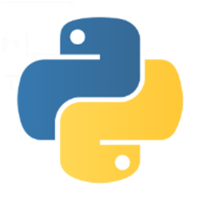

Le langage Python est un langage de programmation objet interprété. Il a été développé par Guido Von Rossum à partir de 1989 à l’Université d’Amsterdam.

Python est un langage multiplateforme, c'est-à-dire disponible sur plusieurs architectures (compatible PC, tablettes, smartphones, ordinateur low cost Raspberry Pi...) et systèmes d'exploitation (Windows, Linux, Mac, Android...).
Le langage Python est gratuit, sous licence libre.
C'est un des langages informatiques les plus populaires avec C, C++, C#, Objective-C, Java, PHP, JavaScript, Delphi, Visual Basic, Ruby et Perl (liste non exhaustive).
Actuellement, Python en est à sa version 3 depuis 2008.
Attention : Python 2 n'est pas compatible avec Python 3 !
Que peut-on faire avec Python ?
Beaucoup de choses !
...
Des dizaines de milliers de librairies sont disponibles sur le dépôt officiel PyPI.
Créé avec HelpNDoc Personal Edition: Générateur de documentation et EPub facile